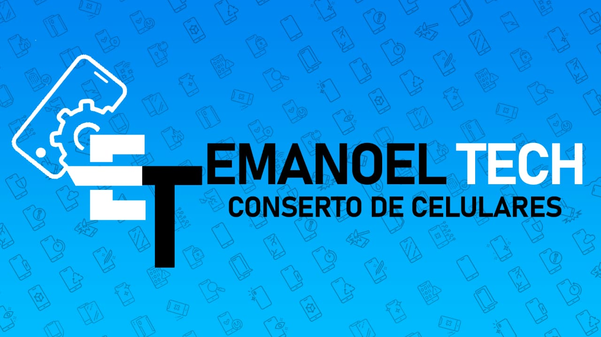
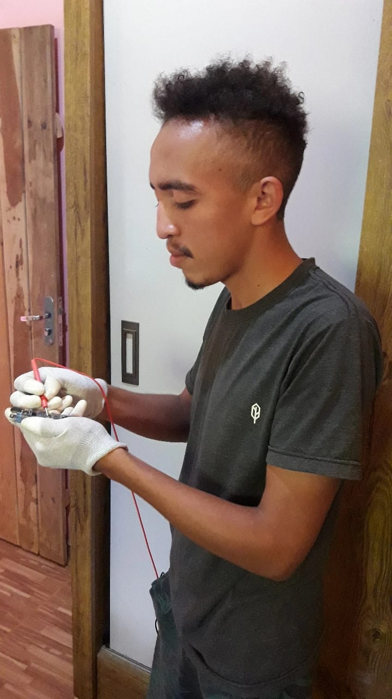
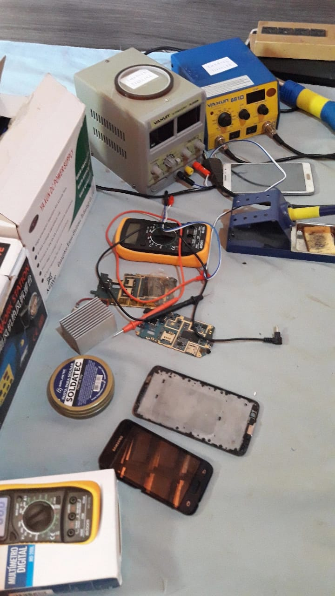
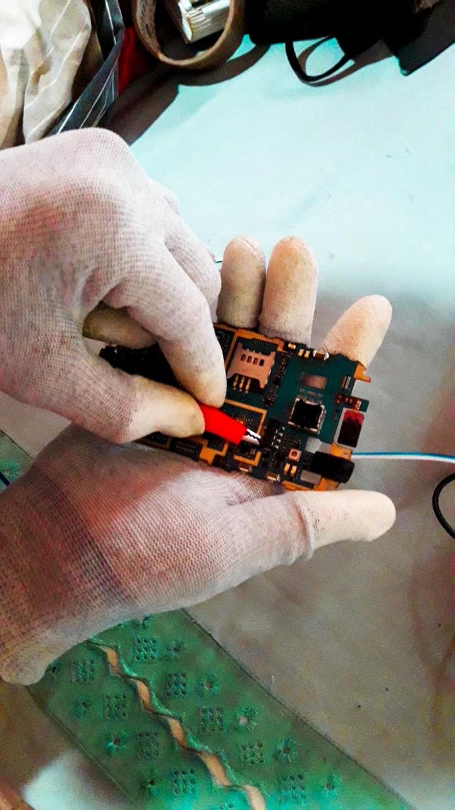
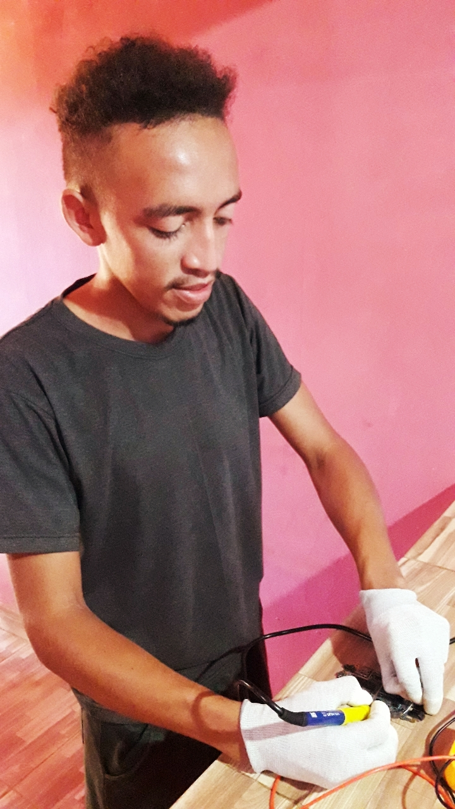

Quem somos ?
Somos um micronegócio pertencente ao ramo dos eletronicos com sede em Angical do Piauí, mais precisadamente na comunidade caldeirão. Acesse o link abaixo e seja direcionado para nossa localidade exata.
A Emanuel Tec oferece os melhores serviços relacionados à reparos de aparelhos Celulares.Confira nossos trabalhos e veja que podemos ser úteis para solucionarmos os seus problemas.
Serviços Prestados
-Troca de conectores de carga.
-Troca de touch (problemas de sensibilidade ao toque).
-Troca de display (problema de tela parcialmente ou completamente trincada).
-Troca de todo e qualquer botão físico do aparelho.
-Troca de película das principais marcas; Lg, Samsung, Motorola e Xiaomi.
-Desbloqueio de tela de segurança (obs: é preciso comprovar ser o real dono do aparelho).
-E etc...
Manutencão Geral
   Fazemos verificação geral nos componentes que contribuem para o bom funcionamento da placa mãe, que por consequência permite processamento do sistema operacional. Em casos que o aparelho apresenta danificado total do dispositivo, pode ocorrer que apenas um dos tantos outros componentes esteja danificado, necessitando apenas da troca desse componete em específico. Fica a critério do cliente se vale a pena a troca do tal componente ou a compra de um dispositivo totalmente novo.
Atenção:
Não trabalhamos com aparelhos que foram submetidos à imersão D'água.